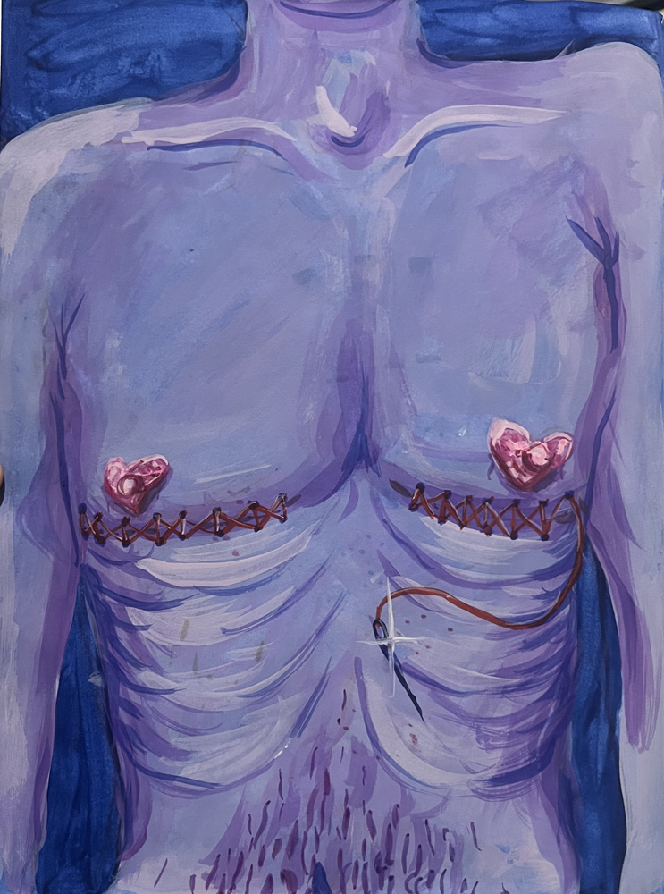
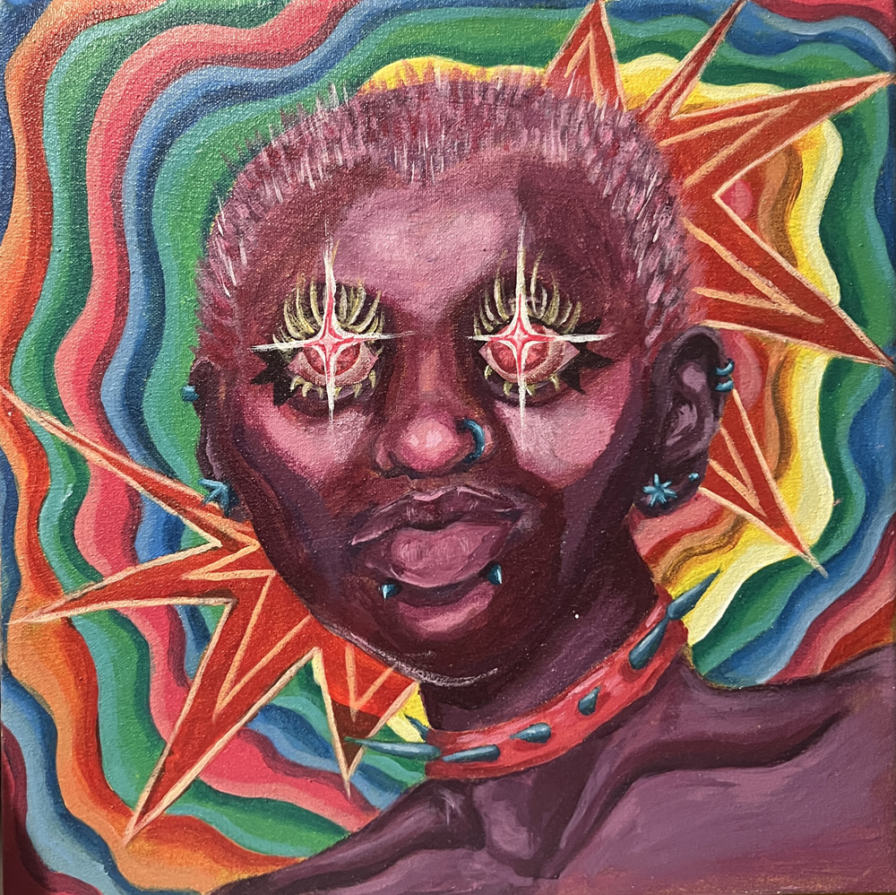
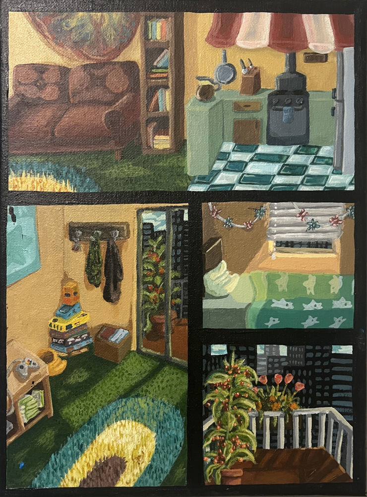
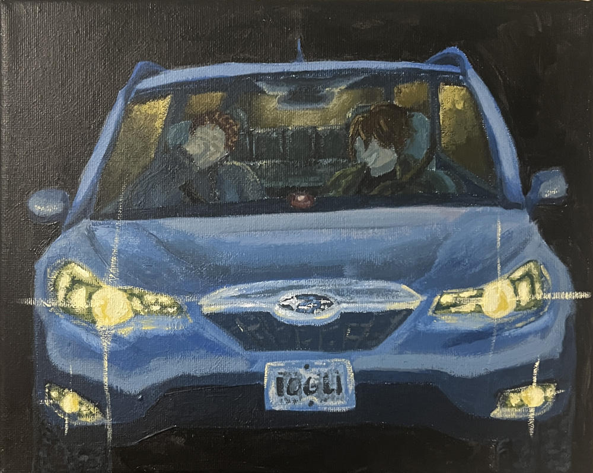

A painting, on average, depending on the medium,
takes me about 5 hours to fully make. I specialize
in acrylic paintings that utilize realism with a twist
of whimsy. I also enjoy creating surrealistic imagery
to promote a specific feeling in my paintings. When working
with Watercolor, some of my best pieces are landscapes,
animals, or vegetation. Like with most of my art mediums, I
always play with colors in my paintings, adjusting the tones
depending on the vibe and having high saturation even in
highlights or shadows.